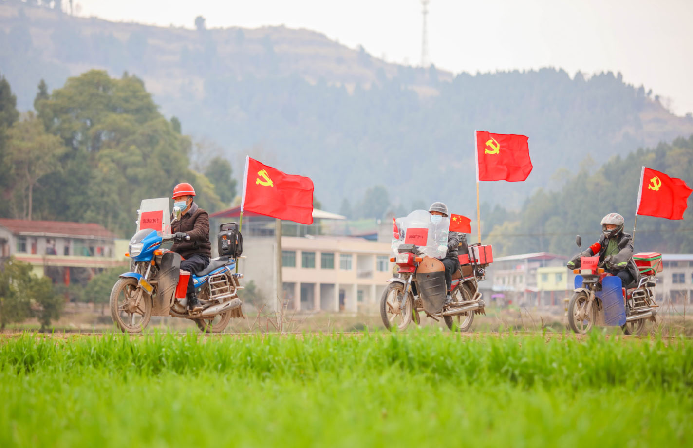
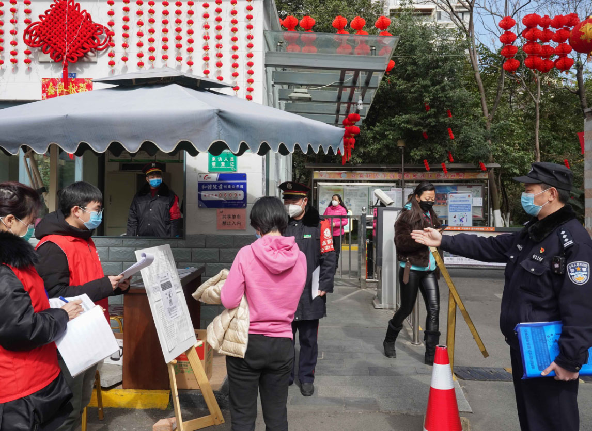
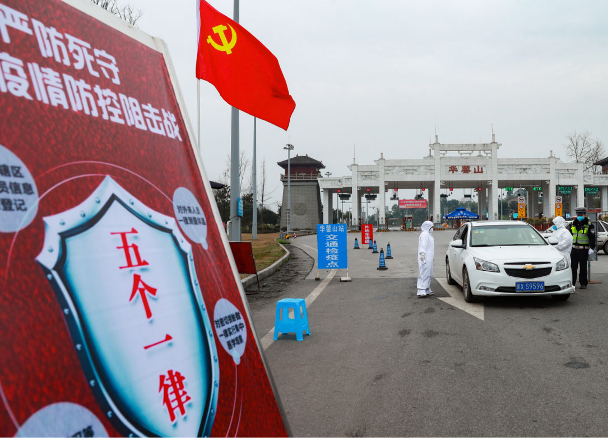
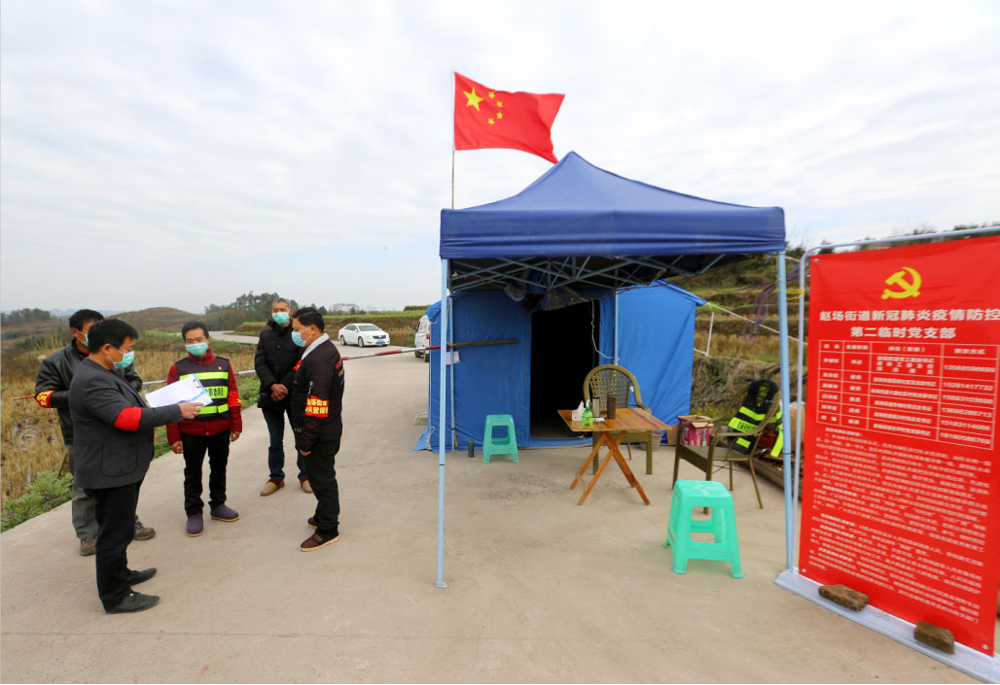
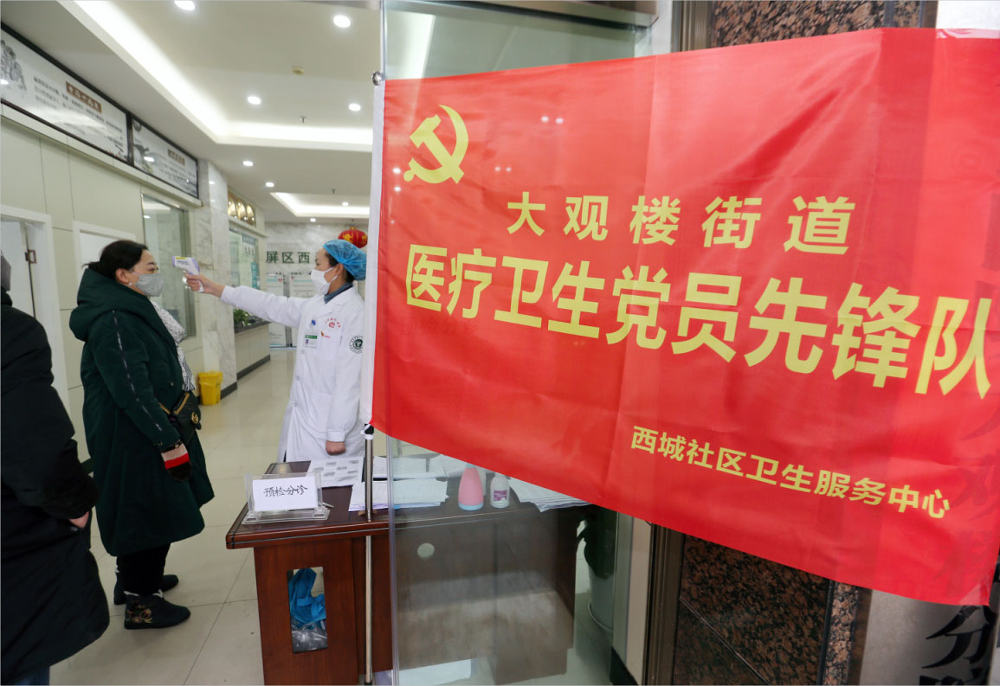

打赢疫情防控这场人民战争，必须紧紧依靠人民群众。面对来势汹汹的新冠肺炎疫情，在省委、省政府领导下，各级各部门联防联动，广大社区工作者、公安干警、志愿者、新闻工作者、基层干部、下沉干部、科技工作者坚守岗位，快递、超市、环卫、抗疫物资生产运输人员不辞劳苦，普通民众自觉“宅”家，自发捐款捐物，诠释了民胞物与、守望相助的深厚情怀。巴蜀儿女的智慧和力量凝聚在一起，我们将无坚不摧、无往不胜！
第一组
一分决策，九分落实。统筹推进疫情防控和社会经济发展，推动各项部署落地，扎根于广袤的农村和社区的广大基层干部是坚定践行者。党旗在一线高高飘扬，凝聚起共克时艰的强大力量。

基层党员干部走村入户宣传防疫知识1

基层党员干部走村入户宣传防疫知识2

基层党员先锋队严检细查过往车辆

小区工作人员对进出居民进行体温检测1

小区工作人员对进出居民进行体温检测2